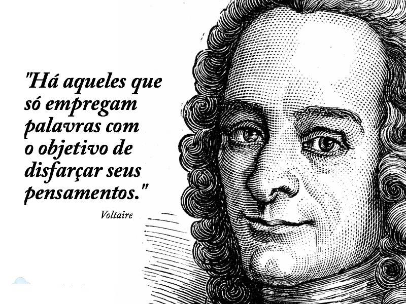

Voltaire, um dos grandes nomes do Iluminismo francês, destacou-se por sua defesa firme da liberdade de expressão, da razão e do progresso humano. Crítico feroz da religião organizada, atacava igualmente o catolicismo, o judaísmo e o islamismo, que via como formas de repressão e dominação. No entanto, não era ateu: defendia o deísmo, acreditando em um Deus criador que não interferia nos assuntos humanos.
Para ele, a educação racional e científica era essencial para combater a ignorância e promover o avanço da sociedade. Por isso, combatia a influência da Igreja na formação intelectual do povo e rejeitava o fanatismo religioso.
Politicamente, Voltaire teve posições contraditórias. Inicialmente, criticava a democracia e defendia uma monarquia esclarecida, acreditando que um governante instruído poderia promover reformas. Porém, decepcionado com o autoritarismo do rei Frederico II da Prússia, passou a apoiar uma maior participação popular nas decisões políticas.
Uma das partes mais controversas de seu pensamento foi a defesa do poligenismo, que sugeria origens distintas para diferentes raças humanas. Embora essa ideia tenha sido criticada, Voltaire foi um opositor declarado da escravidão, denunciando seus abusos e as justificativas religiosas e econômicas que a sustentavam.
Seu legado foi profundo. As ideias de Voltaire influenciaram a Revolução Francesa, a Independência dos EUA e o pensamento moderno sobre liberdade, crítica ao poder e racionalidade. Morreu em 1778, mas sua luta por um mundo mais livre, justo e esclarecido continua atual.
